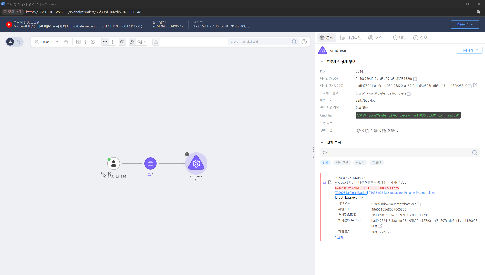

MITRE ATT&CK 액션을 기준으로 대응 방안을 작성
Microsoft 파일을 다른 이름으로 복제하는 행위를 탐지합니다.

시스템에서 비정상적인 파일 이름 변경을 탐지하고, 합법적인 시스템 유틸리티와 동일한 이름을 사용한 파일이 다른 경로에 존재하는지 확인합니다. 비정상적인 경로나 이름을 가진 파일을 조사하고, 해당 파일을 악성 코드로 의심합니다.
해당 파일의 해시 값을 확인하여 원본 시스템 유틸리티와 일치하는지, 디지털 서명이 유효한지 검증합니다.
공격자가 시스템 유틸리티를 위장하여 악성 파일을 실행한 경우, Task Manager, Process Explorer, ps 등의 도구를 통해 실행 중인 프로세스를 확인합니다.
공격자가 위장한 시스템 유틸리티와 관련된 명령 줄을 분석하여, 악성 파일이 어떠한 동작을 수행했는지 파악합니다.
악성 유틸리티가 실행된 후 외부로 데이터가 전송되거나 원격 서버와의 통신이 발생했는지 확인하기 위해 네트워크 트래픽을 분석합니다. Wireshark 또는 NetFlow를 사용하여 비정상적인 네트워크 연결을 탐지합니다.
악성 유틸리티가 외부 명령 및 제어(C2) 서버와 통신하려는 경우, 해당 연결을 즉시 차단하고 네트워크 활동을 조사합니다.
디스크 이미징을 수행하여 변경된 파일과 관련된 전체 파일 시스템을 분석하고, 악성 파일이 원본 시스템 유틸리티와 어떤 관계가 있는지 파악합니다. 메모리 덤프를 분석하여 공격자가 실행한 프로세스와 그 활동을 추적합니다.
시스템 유틸리티가 정상적인 경로에서 실행되고 있는지 확인하고, 경로가 변경되었거나 복제된 경우 해당 파일을 조사합니다.
공격자가 위장하여 사용한 시스템 유틸리티를 악성 파일로 확인한 경우, 이를 즉시 삭제합니다. 삭제하기 전에, 포렌식 증거 수집을 위해 파일을 백업합니다.
안티바이러스(AV) 또는 엔드포인트 탐지 및 대응(EDR) 솔루션을 사용하여 악성 파일을 스캔하고 제거합니다.
공격자의 활동이 확인된 시스템을 네트워크에서 격리하여 추가적인 악성 활동을 방지하고, 시스템 복구 및 포렌식 분석을 위한 준비를 합니다.
공격자가 사용한 동일한 기술이 네트워크 내 다른 시스템에도 적용되었을 가능성을 염두에 두고, 다른 시스템도 점검하고 필요한 경우 격리합니다.
위장 기법을 통한 공격이 발생한 후, 내부 보안 정책을 재평가하고 파일 이름 변경에 대한 보안 절차를 강화합니다.
시스템 유틸리티 위장을 통한 공격을 방지하기 위해, 사용자들에게 의심스러운 파일 실행에 대해 경각심을 갖도록 교육합니다.
애플리케이션 화이트리스트 설정
소프트웨어 제한 정책(SRP) 및 AppLocker 사용
시스템 유틸리티 무결성 검사
해시 값 검증
관리자 권한 제한
경로 기반 실행 제한
실행 로그 기록
SIEM 경고 설정
Action 실행시 함꼐 영향을 받는 다른 Techniqes
| ATT&CK |
|---|
| T1036.003 |
| T1059.003 |
| D3FEND |
|---|
| D3-FIM File Integrity Monitoring |
| D3-SICA System Init Config Analysis |
| D3-FA File Analysis |